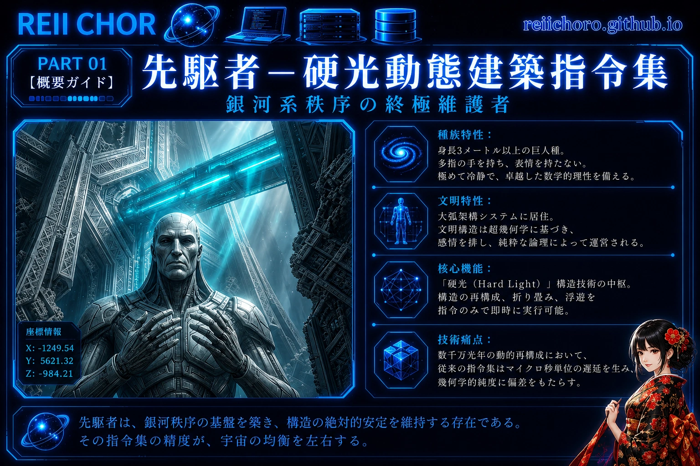
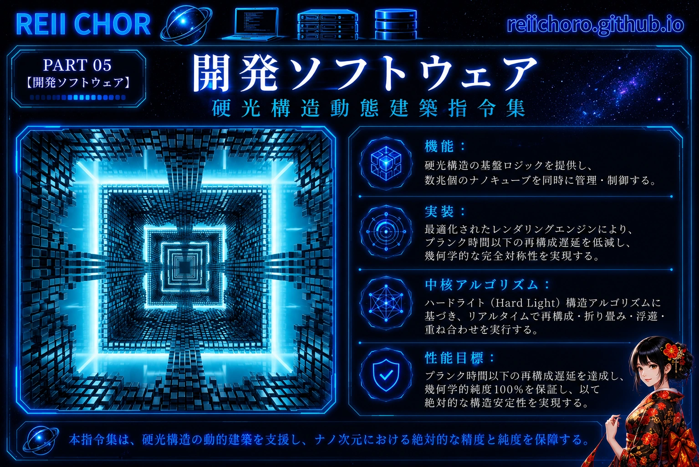
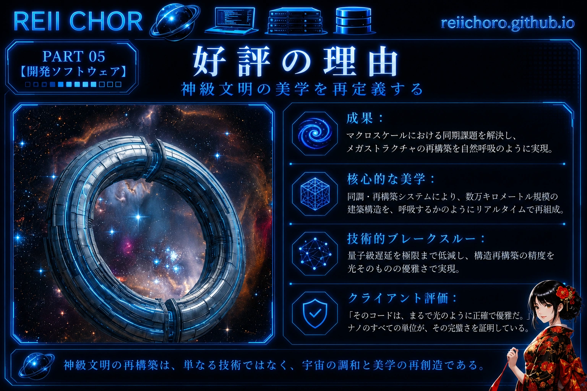

Part 01: 【クライアントプロファイル】—— 銀河系秩序の究極の守護者
身長3メートル以上の人類型文明であり、その表情は厳格かつ冷徹。極限の数学的理性を崇拝する。彼らの建築の核心は「ハードライト（Hard Light）」であり、その構造は命令に応じてリアルタイムに再構成される。

Part 02: 【デリバリー成果物】—— Lux-Arch v10.0：ハードライト構造動態建築命令セット
ハードライト建築に低レイヤのロジックを提供し、レンダリングエンジンのアルゴリズムを最適化。メガストラクチャーの再構成遅延をプランク時間以下に抑え、100%純粋な幾何学的対称性を実現する。

Part 03: 【高評価の理由】—— 神級文明の幾何学美の再構築
マクロスケールにおける同期の難題を解決し、数万キロメートルに及ぶ建築の再構成を呼吸のように滑らかにした。クライアントからのフィードバック：「彼のコードは、光のように精密でエレガントだ。」